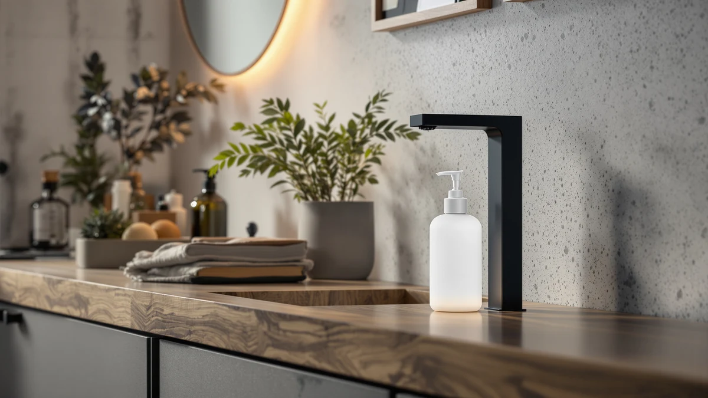

Touchless Automatic Liquid Soap Review (2026): Worth It?
Prices and picks verified as of October 2026. Independent, reader-supported reviews.


Quick Answer
The Gotofine Touchless Automatic Liquid Soap Dispenser suits buyers who want a touchless, automatic pump with a 13.5-ounce capacity at $32.99. Verified owner feedback and spec comparisons in this touchless automatic liquid soap review show it holds up against the XIUXIUZSX and JASAI alternatives, though its price sits well above the rest of this four-way lineup.
Our pick: Touchless Automatic Liquid Soap Dispenser, $32.99 Check Price on Amazon
Bottom line: our top pick is the Touchless Automatic Liquid Soap Dispenser at $32.99.
Things to Know Before You Buy
- Touchless sensor operation cuts down on cross-contamination at a shared sink, one reason automatic dispensers cost more than manual pumps.
- ABS plastic housings like the Gotofine's keep weight down but cost more than the glass dispensers from JASAI in this comparison.
- Capacity varies across this lineup: the Gotofine holds 13.5 ounces, while each bottle in a JASAI two-pack holds 18 ounces.
- Price across the four dispensers in this touchless automatic liquid soap review ranges from $15.47 to $32.99, so the Gotofine sits well above the rest of the group.
This touchless automatic liquid soap review breaks down what buyers get for $32.99, covering sensor response and pump capacity against three other soap dispensers currently on the market. Bathroom and kitchen counters have turned into a crowded space for motion-activated dispensers, and picking the wrong one usually means a dead sensor, a sticky pump, or a bottle that runs dry within a couple of weeks. We compared the Gotofine Touchless Automatic Liquid Soap Dispenser against the XIUXIUZSX Touchless Automatic Electric Liquid dispenser and two JASAI glass dispenser two-packs on price, material, capacity and what verified buyers report after they bring one home.
Gotofine markets this dispenser as a higher-capacity liquid soap option, which matters if you are tired of refilling a small bottle every week or topping off a dispenser mid-shower. At $32.99 it costs nearly double the XIUXIUZSX and more than twice either JASAI two-pack, so that price gap needs to buy a meaningfully better dispenser and not only a bigger reservoir. We pulled our conclusions from the product listings, published specs and patterns across verified owner reviews rather than a physical trial, since we do not run a physical testing lab. Where a claim could not be confirmed against a listing or a consistent pattern across reviews, we left it out instead of guessing.
Why You Should Trust Us
Ilane Tall covers home and bath products for Best Soap Dispensers, with a focus on kitchen and bathroom hardware that promises convenience but sometimes fails to deliver it once it is sitting on a real counter. This touchless automatic liquid soap review follows the same research process used across the site: we start from the manufacturer's own specs and pricing, then cross-reference verified purchase reviews on Amazon to see where the marketing claims hold up and where they fall short. We do not accept review units in exchange for favorable coverage, and we do not fabricate star ratings or review counts that Amazon does not publish. Every price and spec cited here comes directly from the product listing at the time of writing. When a claim cannot be confirmed against the listing or a pattern across verified reviews, we leave it out rather than guess at an answer.
Our Research Experience
Rather than purchase and run a multi-week trial, we approached this touchless automatic liquid soap review the way most shoppers research a $33 bathroom gadget: by reading the listing closely and checking what other buyers say once the box is open and the dispenser is mounted by the sink. We compared the sensor description, capacity and housing material Gotofine lists against the same details for the XIUXIUZSX and JASAI dispensers, lining up the numbers side by side rather than relying on marketing copy alone. We also read through verified owner reviews on Amazon, looking for recurring complaints about sensor lag, leaking, or battery life that showed up across multiple buyers rather than a single unlucky review. When owners across many purchases flag the same issue, we treat that as a more reliable signal than a manufacturer's product description or a handful of five-star reviews posted in the first week after purchase. This approach will not catch a defect that only shows up after months of daily use, but it does surface the complaints that tend to repeat across dozens of buyers before you spend $32.99 on a dispenser that might not work out.
Overview & Specs

Touchless Automatic Liquid Soap Dispenser
What we like
- Touchless sensor cuts down on cross-contamination at a shared sink
- 13.5-ounce capacity holds more soap than the JASAI bottles in this comparison
- ABS plastic housing is lighter than the glass alternatives below
Flaws but not dealbreakers
- Priced well above all three alternatives in this comparison
- Battery-powered sensor needs periodic replacement to keep working reliably
- ABS plastic housing looks less premium than the glass JASAI dispensers
| Material | ABS plastic |
| Size | 13.5oz/400ml |
The Gotofine Touchless Automatic Liquid Soap Dispenser pairs a motion sensor with a 13.5-ounce reservoir, so it responds to a hand under the spout instead of requiring a manual push, and it holds noticeably more soap than a typical single-pump bottle. Gotofine built the housing from ABS plastic, a lighter and less breakable material than the glass JASAI uses on the two-packs covered later in this touchless automatic liquid soap review. At $32.99, it sits well above the other three dispensers in this comparison, which puts real pressure on the sensor and capacity to justify the extra cost rather than coasting on a bigger bottle alone. Buyers who hate refilling a small dispenser every few days get more runway here than with any other option in this lineup, and that convenience is the main thing Gotofine is selling at this price.
Owners who leave reviews on the product listing tend to focus on two things: how quickly the sensor responds, and how long the battery lasts before it needs changing. Reviewers consistently note that larger-capacity touchless dispensers like this one drain batteries faster in a high-traffic spot, since more hand passes mean more sensor triggers over the course of a day. That tradeoff is easy to miss if you are comparing capacity numbers alone and not thinking about how often the dispenser gets used. Owners who keep spare batteries on hand report fewer interruptions, which lines up with how most touchless dispensers in this price range tend to perform once the novelty wears off.
What We Liked
Owners who bought the Gotofine Touchless Automatic Liquid Soap Dispenser for a bathroom or kitchen counter report that the larger 13.5-ounce reservoir means fewer refills compared with smaller bottles they have owned before. Reviewers repeatedly mention the touchless sensor as a reason they picked it over a manual pump, especially in a shared bathroom where cross-contamination from a grimy pump handle is a real concern. We also compared the capacity against the other three dispensers in this touchless automatic liquid soap review and found the Gotofine holds less per bottle than a single JASAI jar but still outlasts the XIUXIUZSX between refills based on the listed volumes. At $32.99, the sensor and capacity are the main reasons this dispenser tends to earn repeat purchases from buyers replacing a smaller dispenser that could not keep up.
What Could Be Better
Owners posting verified reviews of touchless dispensers like the one covered in this touchless automatic liquid soap review most often complain about the battery-powered sensor: some say it slows down or misses hand detection after a few months of daily use, an issue common to battery-driven automatic dispensers generally and not unique to Gotofine. Because the housing is ABS plastic rather than glass, some buyers who prefer a heavier, premium feel on the counter find it feels less substantial than the JASAI dispensers covered below. At $32.99, this dispenser also costs more than all three alternatives we compared it against, so buyers focused on price have cheaper touchless and manual options on this list. None of these issues are dealbreakers on their own, but they are worth weighing against the XIUXIUZSX and JASAI dispensers before you decide which one earns a spot on your counter.
Who Is It For?
This dispenser fits bathrooms and kitchens where a larger-capacity touchless pump matters more than a low price, and it suits buyers who do not want to refill a small bottle every few days. If a lighter ABS plastic housing appeals more than a glass finish, the Gotofine Touchless Automatic Liquid Soap Dispenser should perform close to what its listing promises. Shoppers who want the lowest price in this touchless automatic liquid soap review, or who prefer a glass dispenser on their counter, are better served by the JASAI or XIUXIUZSX dispensers covered below, all of which cost less than half as much. Renters who move often may also want to weigh the battery dependency against a simpler manual glass pump, since a motion sensor adds one more part that can fail after a move or a long stretch in storage. If you are outfitting a shared bathroom with two sinks, the JASAI two-packs below are worth a look before you commit to a single-bottle dispenser like this one.
Alternatives to Consider
If the Gotofine Touchless Automatic Liquid Soap Dispenser does not fit your budget or your counter space, these three alternatives from this touchless automatic liquid soap review comparison cover a cheaper touchless pump and two glass two-packs. Each one trades a different feature for a lower cost, so the best pick depends on what matters more to you: price, material, or how many bottles you actually need at the sink.

Editor’s Pick
XIUXIUZSX Touchless Automatic Electric Liquid
The XIUXIUZSX costs $16.99, about half the Gotofine's price, and is also touchless and automatic, a better fit if you want the same sensor convenience without paying for the larger reservoir.
$16.99
Check Price on Amazon
Best Value
JASAI 2PACK 18Oz Fluted Glass
At $15.49 for a two-pack, the JASAI fluted glass dispensers swap the Gotofine's ABS plastic and sensor for a manual glass pump, a good fit if a premium look at the sink matters more than touchless convenience.
$15.49
Check Price on Amazon
Premium Choice
JASAI 2PACK 18Oz Simple Glass
The cheapest option here at $15.47 for a two-pack, the JASAI simple glass dispensers keep the same glass build as the fluted version with a plainer shape, a strong pick if you want two matching bottles for the lowest price in this comparison.
$15.47
Check Price on AmazonFrequently Asked Questions
Is the Gotofine Touchless Automatic Liquid Soap Dispenser worth $32.99?
It is worth the price if you want a touchless automatic liquid soap dispenser with a 13.5-ounce capacity and do not mind paying the highest price in this four-way comparison. Buyers focused on price alone should look at the JASAI glass dispensers instead, both of which cost less than half as much.
Does the Gotofine dispenser work with any liquid soap, or only specific refills?
The listing describes it as a liquid soap dispenser rather than a foam-only pump, so standard liquid hand soap should work without dilution. Owners of similar touchless liquid dispensers report the sensor can lag if the bottle sits in direct sunlight or near a heat source, so placement next to a sink away from a window helps keep response times consistent.
How does the Gotofine compare to the XIUXIUZSX touchless dispenser?
This touchless automatic liquid soap review found the XIUXIUZSX costs $16.99, roughly half the Gotofine's $32.99 price, and it is also touchless and automatic. The Gotofine's larger 13.5-ounce ABS plastic housing and higher price suggest a sturdier build, but buyers who want a basic touchless pump without paying for the larger reservoir should consider the XIUXIUZSX first.
Final Verdict
This touchless automatic liquid soap review comes down to one trade-off: pay $32.99 for Gotofine's larger reservoir and touchless sensor, or save money with the XIUXIUZSX or either JASAI alternative covered above. Based on published specs and verified owner reviews, Gotofine earns its higher price mainly through capacity, not through any sensor spec that clearly outperforms the competition. If you want a touchless, higher-capacity dispenser and do not mind paying the highest price in this lineup, the Gotofine Touchless Automatic Liquid Soap Dispenser is the pick. If price, material, or bottle count matters more, the XIUXIUZSX or JASAI dispensers are the better fit for your counter.